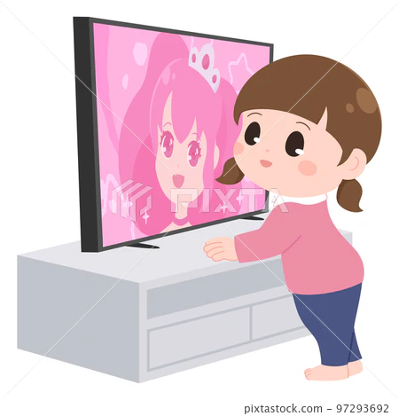
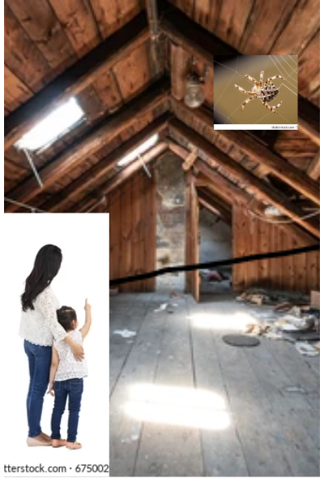

Once up on a time there was a 11 year old girl named Jessi. She was living with her mom, dad and little sister jeya in india. They were living in kerala. Jessi loved to play music exspecially piano.
One day jessi was watching a music show in TV. She saw a young boy just like her but with out one leg and one hand but the special thing is even though he didn't have them he played the piano like a pro. Seeing this Jessi was impressed.She went to her parents and said "Mom, Dad! i want to join a piano class i want to play piano just like that boy in the TV". Her parents thought for a second and finally agreed.
Every saturday and sunday jessi has to go to piano class, at the start Jessi found it easy but then all the lessions started becoming harder and harder. Jessi atleast took two weeks just to learn three lessions.Jessi couldn't take it anymore.So she told her Mom ,"Mom! I can't go on with these lessions anymore there too hard ",she cried. She also said ,"I can never be a good musician". Her mother thought for a second then she said, "Jessi come with me". Jessi's mom took her to the Attic.She pointed a spider building a web and said to look at it carefully. Jessi was confused but she did it anyway. Jessi noticed that no matter how much the spider tried to build the web but it kept breaking but the spider didn't give up it still continued to build the web and finally it succeeded. Jessi's mom told her ,"see jessi even though the web kept breaking even the little spidder didn't giveup because if it did it wont have food just like that if u giveup ofcourse you won't be a musician. Don't ever giveup, Did you know even a scientist Thomas Alwa Edision atleast tried 99 times to make a light bulb.he only succeeded the hundredth time think if he had giveup we would be still using lamps". After this Jessi understood that giving up is not the right sollution.
Days passed jessi is an adult now and just as she wanted she became a pianist. She was also coming in the TV. Her mom ,Dad and her little sister jeya was proud of her its all because Jessi didn't giveup on her dreams.
Don't ever give up because its not a right solution.
"Therefore we do not lose heart though outwardly we are wasting away, yet inwardly we are being renewed day by day. For our light and momentary trobles are achieving for us an eternal glory that far outweighs them all
2corinthians 4:1"